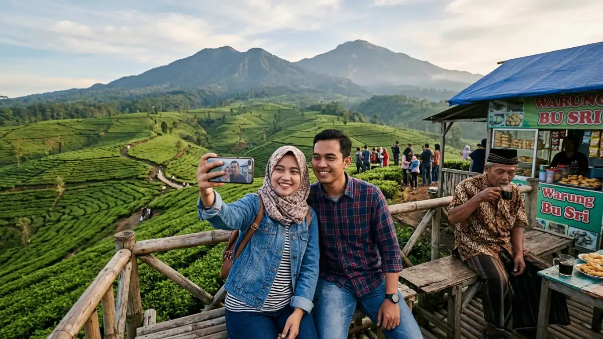
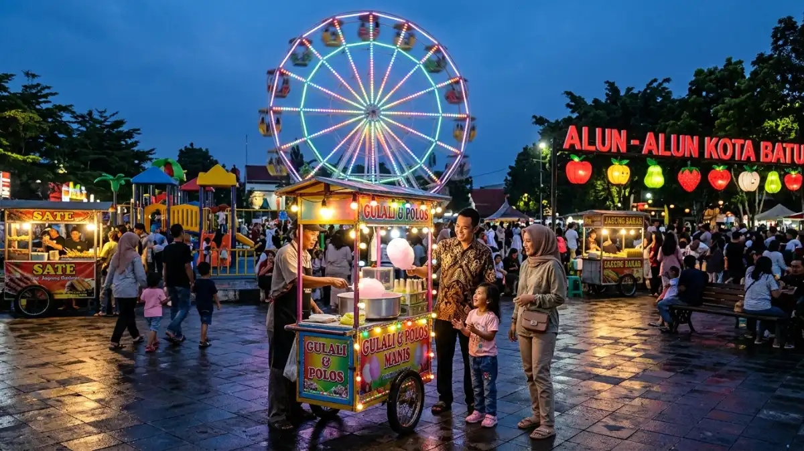

Ilustrasi pemandangan wisata alam kebun teh di Batu, Malang.Wisata Malang yang murah tetap bisa memberi pengalaman liburan berkualitas, mulai dari alun-alun gratis, wisata alam, hingga kampung wisata dengan tiket masuk terjangkau di kawasan Malang dan Batu.
- Apa Itu Wisata Malang yang Murah?
- Mengapa Malang Cocok untuk Liburan Hemat?
- Apa Saja Rekomendasi Wisata Gratis di Malang?
- Bagaimana dengan Wisata Alam Berbiaya Rendah?
- Bagaimana Cara Mengatur Anggaran Liburan ke Malang?
- Apa Saja Kesalahan Umum saat Mencari Wisata Murah di Malang?
- Perbandingan Gaya Liburan Hemat vs Liburan Premium di Malang
- Kesimpulan
Apa Itu Wisata Malang yang Murah?
Wisata Malang yang murah adalah konsep liburan di kawasan Malang Raya, mencakup Kota Malang, Kabupaten Malang, dan Kota Batu, yang dirancang dengan pengeluaran terbatas namun tetap menikmati keindahan alam, budaya, dan wahana rekreasi setempat.
Konsep ini penting bagi wisatawan dengan anggaran terbatas, keluarga besar, mahasiswa, maupun backpacker yang ingin menjelajahi Malang tanpa menguras kantong.
Malang Raya dikenal sebagai kawasan pegunungan dengan udara sejuk, sehingga banyak aktivitas wisata alam yang secara alami murah karena tidak memerlukan wahana buatan.
Selain itu, banyak ruang publik seperti alun-alun dan taman kota yang bisa dinikmati tanpa biaya masuk sama sekali.
Mengapa Malang Cocok untuk Liburan Hemat?
Malang cocok untuk liburan hemat karena memiliki kombinasi wisata alam gratis, transportasi umum terjangkau, dan biaya hidup yang relatif rendah dibanding kota besar lain di Jawa.
Beberapa faktor yang mendukung Malang sebagai destinasi ramah kantong meliputi:
- Ketersediaan angkutan umum (angkot) dengan tarif terjangkau antar-Malang dan Batu.
- Banyaknya ruang terbuka publik yang tidak memungut biaya masuk.
- Kuliner lokal seperti bakso, cwie mie, dan keripik apel yang harganya bersahabat.
- Penginapan kelas backpacker dan homestay yang tersedia dengan variasi harga.
Apa Saja Rekomendasi Wisata Gratis di Malang?
Rekomendasi wisata gratis di Malang mencakup alun-alun kota, kampung tematik, dan beberapa jalur trekking alam yang tidak memungut tiket masuk.
Beberapa contoh destinasi yang umumnya tidak berbayar atau bertarif sangat rendah:
- Alun-Alun Kota Malang, ruang publik dengan taman dan air mancur di pusat kota.
- Alun-Alun Kota Batu, area terbuka dengan bianglala dan spot foto malam hari.
- Kampung Warna Warni Jodipan, kawasan permukiman berwarna-warni dengan biaya masuk simbolis.
- Jalur pendakian ringan dan area hutan pinus yang umumnya hanya mengenakan biaya parkir.
Setiap destinasi ini cocok dikunjungi dengan berjalan kaki atau naik angkot, sehingga total pengeluaran bisa ditekan seminimal mungkin.

Ilustrasi Suasana malam di Alun-Alun Kota Batu, salah satu destinasi wisata gratis favorit.Bagaimana dengan Wisata Alam Berbiaya Rendah?
Wisata alam berbiaya rendah di Malang umumnya berupa air terjun, hutan pinus, dan area agrowisata dengan tiket masuk yang jauh lebih murah dibanding taman hiburan modern.
Beberapa kategori wisata alam hemat yang populer di kawasan Malang Batu:
- Air terjun atau coban, yang tiket masuknya biasanya berupa biaya retribusi kawasan.
- Hutan pinus dan area kemah, cocok untuk piknik keluarga dengan biaya minim.
- Wisata petik buah seperti apel dan stroberi, dengan sistem bayar sesuai hasil petik.
- Area persawahan dan perbukitan yang menawarkan spot foto alami tanpa biaya tambahan.
Wisata alam ini juga mendukung gaya liburan yang lebih santai dan cocok untuk yang ingin menghindari keramaian wahana besar.
Bagaimana Cara Mengatur Anggaran Liburan ke Malang?
Cara mengatur anggaran liburan ke Malang adalah dengan menyusun prioritas destinasi, memilih transportasi umum, dan mengombinasikan tempat gratis dengan satu atau dua wahana berbayar sebagai pengalaman utama.
Beberapa tips praktis mengatur anggaran:
- Tentukan satu atau dua destinasi utama berbayar, sisanya pilih yang gratis.
- Gunakan angkot atau transportasi berbagi untuk menekan biaya perjalanan.
- Bawa bekal minum dan camilan ringan untuk mengurangi pengeluaran di lokasi wisata.
- Kunjungi destinasi pada hari kerja karena harga tiket cenderung lebih rendah dibanding akhir pekan.
- Manfaatkan promo tiket rombongan jika bepergian dengan keluarga besar.
Dengan strategi ini, liburan ke Malang tetap terasa lengkap tanpa membebani anggaran secara berlebihan.
Apa Saja Kesalahan Umum saat Mencari Wisata Murah di Malang?
Kesalahan umum saat mencari wisata murah di Malang adalah terlalu memaksakan jumlah destinasi dalam satu hari sehingga biaya transportasi justru membengkak.
Beberapa kesalahan yang sering terjadi:
- Menjadwalkan terlalu banyak lokasi dalam satu hari sehingga menambah biaya transportasi.
- Tidak mengecek estimasi tarif masuk terbaru sebelum berangkat.
- Mengabaikan biaya parkir yang bisa terakumulasi jika mengunjungi banyak tempat.
- Memilih akhir pekan atau musim liburan panjang saat harga cenderung lebih tinggi.
Menghindari kesalahan ini membantu perjalanan tetap efisien dari sisi waktu maupun biaya.
Perbandingan Gaya Liburan Hemat vs Liburan Premium di Malang
Liburan hemat di Malang berfokus pada wisata alam dan ruang publik gratis, sedangkan liburan premium lebih menekankan wahana modern dan penginapan bintang.
| Aspek | Liburan Hemat | Liburan Premium |
|---|---|---|
| Destinasi | Alun-alun, alam, kampung wisata | Taman hiburan modern, museum interaktif |
| Transportasi | Angkot, jalan kaki | Sewa mobil pribadi |
| Penginapan | Homestay, hostel | Hotel bintang, resort |
| Kuliner | Warung lokal | Restoran bertema |
Kedua gaya liburan ini sah-sah saja dipilih tergantung kebutuhan dan prioritas wisatawan.
Kesimpulan
Wisata Malang yang murah tetap bisa memberikan pengalaman berkesan dengan mengombinasikan destinasi gratis, wisata alam berbiaya rendah, dan transportasi umum.
Rencanakan itinerary sederhana, prioritaskan satu destinasi utama berbayar, dan manfaatkan ruang publik gratis untuk menekan total pengeluaran liburan.
FAQ (Pertanyaan yang Sering Diajukan)